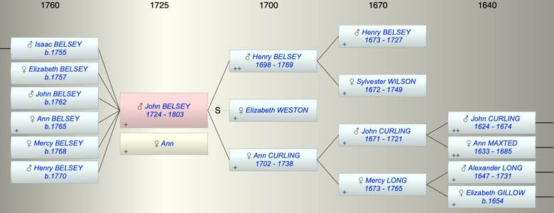

| [Index] |
| John BELSEY (1724 - 1803) |
|  |
| b. 1724 at Coldred |
| +. Ann |
| d. 1803 aged 79 |
| Parents: |
| Henry BELSEY (1698 - 1769) |
| Ann CURLING (1702 - 1738) |
| Siblings (3): |
| Henry BELSEY (1726 - 1797) |
| George BELSEY (1727 - 1796) |
| Alexander BELSEY (1729 - 1794) |
| Children (6): |
| Isaac BELSEY (1755 - ) |
| Elizabeth BELSEY (1757 - ) |
| John BELSEY (1762 - ) |
| Ann BELSEY (1765 - ) |
| Mercy BELSEY (1768 - ) |
| Henry BELSEY (1770 - ) |
| Grandchildren (2): |
| Elizabeth BELSEY, Thomas BELSEY |
| Events in John BELSEY (1724 - 1803)'s life | |||||
| Date | Age | Event | Place | Notes | Src |
| 1724 | John BELSEY was born | Coldred | Note 1 | ||
| 1738 | 14 | Death of mother Ann CURLING (aged 36) | Lydden | Note 2 | |
| 1755 | 31 | Birth of son Isaac BELSEY | Coldred | Note 3 | |
| 1757 | 33 | Birth of daughter Elizabeth BELSEY | Coldred | Note 4 | |
| 1762 | 38 | Birth of son John BELSEY | Coldred | Note 5 | |
| 1765 | 41 | Birth of daughter Ann BELSEY | Coldred | Note 6 | |
| 1768 | 44 | Birth of daughter Mercy BELSEY | Coldred | Note 7 | |
| 1769 | 45 | Death of father Henry BELSEY (aged 71) | Lydden | Note 8 | |
| 1770 | 46 | Birth of son Henry BELSEY | Coldred | Note 9 | |
| 1803 | 79 | John BELSEY died | |||
| Personal Notes: |
|
John Belsey 1724 – 1803 RIN 150 CCA PRC/17/103/626a & PRC/16/482 B/11
Will made 4 Feb 1796 proved 5 Mar 1803 • Yeoman of Tickenhurst, Northbourne Kent. • To his grandchildren Thomas Belsey and Elizabeth Belsey children of his son Isaac Belsey £100 each when 21. • To his daughter Ann Brumley wife of Ingram Brumley of Hougham Kent £100. • The rest of his estate to his wife Ann? Belsey and his son Henry equally. • His wife Ann and son Henry to be executors. Witnesses T Wood and W Philpot |
| Created on a Mac™ using iFamily for Mac™ on 8 Oct 2023 |